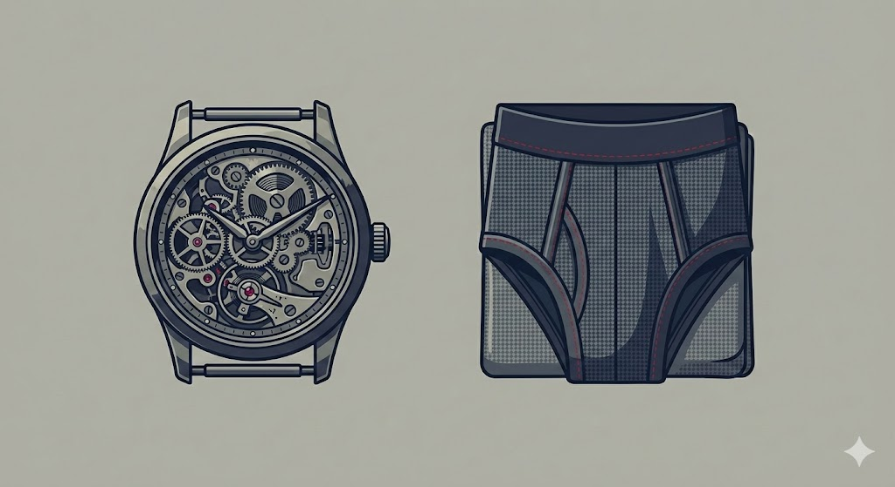
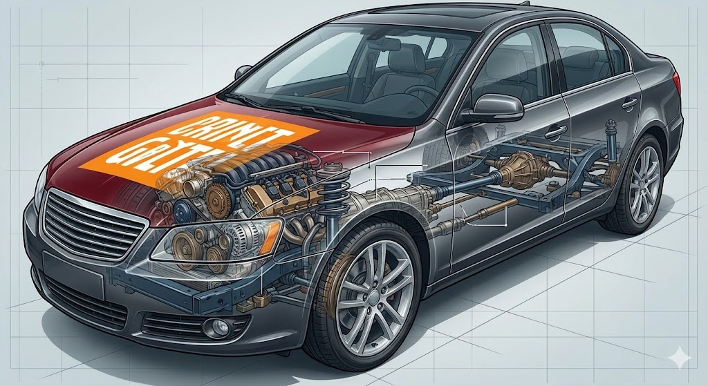
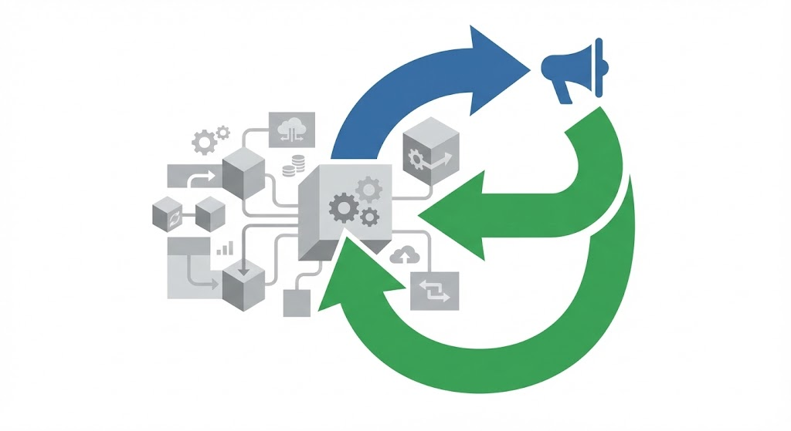
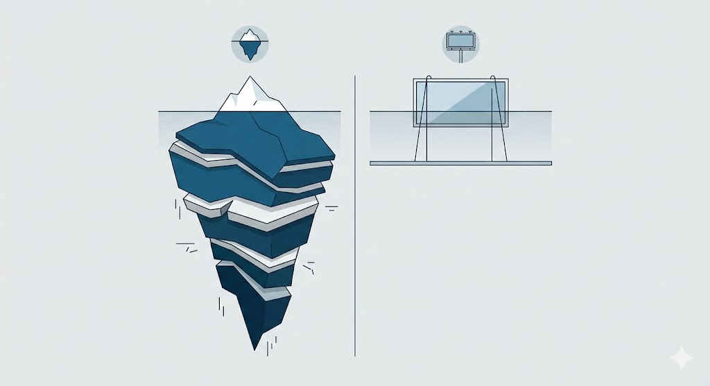
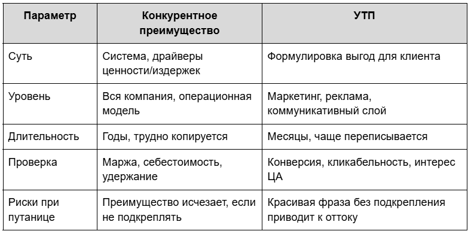
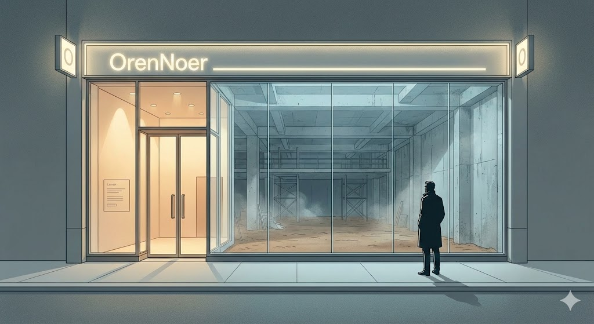
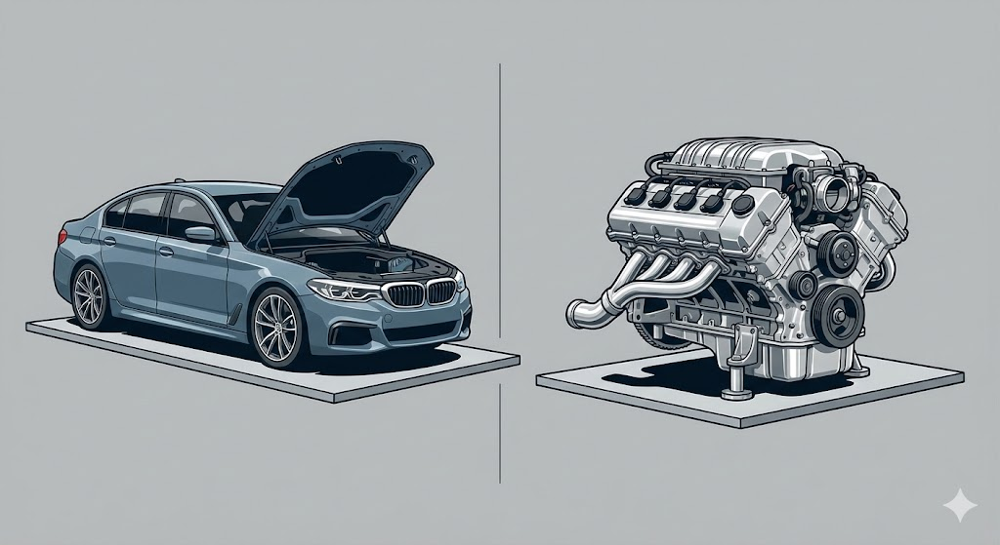
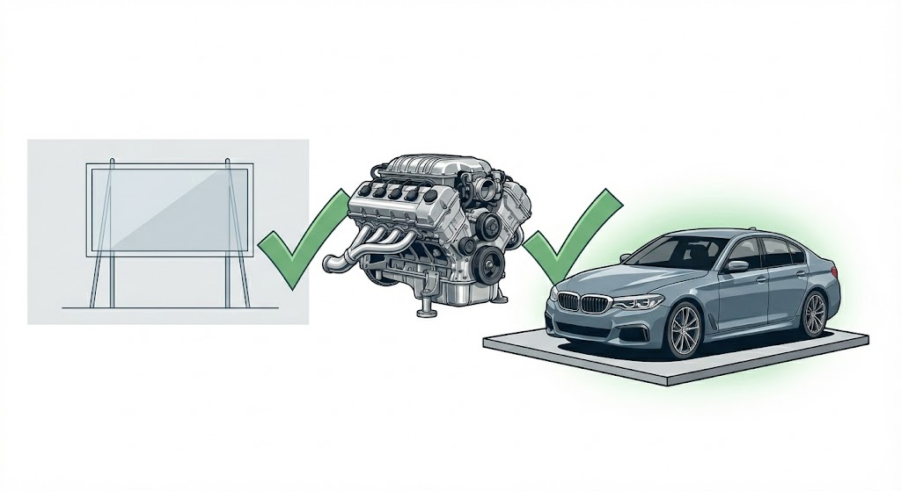
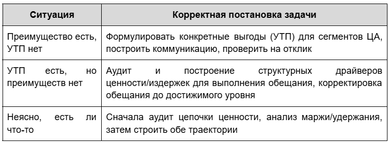

В бизнесе часто смешивают два фундаментально разных понятия - конкурентное преимущество (competitive advantage) и уникальное торговое предложение (УТП, USP, unique selling proposition). Эта путаница похожа на классическую ошибку «не путайте часы и трусы»: инструменты похожи, но функции абсолютно разные.

В процессе стратегической работы, обсуждения на сессиях или постановки задач консультанту такая путаница приводит к организационной слепоте, ошибкам позиционирования, потере времени, денег и доверия клиентов.
Часы и трусы бизнеса: суть векторов
Конкурентное преимущество - мотор под капотом
Это устойчивая система действий (цепочка создания ценности), благодаря которой бизнес может либо получать премию к цене, либо работать на структурно более низких издержках, либо глубоко решать уникальные боли конкретного сегмента рынка.

Любое настоящее конкурентное преимущество проверяется данными: маржа выше рынка, устойчивость выше у конкурентов, удержание выше, willingness-to-pay больше. Преимущество редко видно снаружи, и часто оно не напрямую связано с тем, как компания себя продаёт.
УТП - надпись на капоте
УТП - это сформулированная для клиента выгода, которая коммуницирует (часть) преимущества на понятном, доступном, кратком и запоминающемся языке. Это маркетинговый слоган, обещание или уникальный атрибут, который должен заставить выбирать именно вашу компанию — но его жизнеспособность зависит только от того, насколько реально она подкреплена системными преимуществами.
Два ключевых процесса: как возникают "надпись" и "мотор"

Вектор 1: Мотор → Капот
Идет от реальности к коммуникации. Вы уже имеете структуру, которая создаёт ценность для клиента или себестоимость ниже рынка, и теперь формулируете УТП для конкретных сегментов ЦА. Это путь зрелых компаний, "портеровский" вариант: выявить отличия и грамотно донести их рынку.
Сильные стороны:
- Минимальный риск разочарования рынка: клиент получает обещанное;
- Высокая скорость масштабирования (УТП легко переводится для новых рынков/сегментов);
- Эффективность капитала: деньги идут на оптимизацию, а не на перестройку процессов.
Риски:
- Возможна слабая коммуникация: рынок не понимает, зачем платить больше;
- Преимущество невидимо, если его не проговорить вслух для ЦА.
Вектор 2: Капот → Мотор
Стартует с громкого обещания рынка (УТП), затем команда строит бизнес-модель и операционную систему под это обещание. Типично для стартапов, продуктов на ранней стадии, либо рынков с быстрыми изменениями. Здесь УТП - как амбиция, под которую проектируют и дорабатывают систему создания ценности.
Сильные стороны:
- Быстрое выявление спроса;
- Высокая мотивация команды ("делаем то, что хотят клиенты").
Риски:
- Высокая вероятность разрыва между обещанием и реальностью;
- Риск репутационных потерь, если мотор не запускается, а надпись на капоте уже висит.
Почему нельзя смешивать часы и трусы в обсуждении (сессии, консалтинге)

Разница по структуре (Таблица)

Ошибка 1: обсуждать конкурентное преимущество как УТП
Команда говорит "Наше главное отличие - мы класснее", но ничего не меняет в цепочке создания стоимости/издержек. Это симулякр: образ, не подкрепленный реальностью.
Последствия:
- Стратегические сессии превращаются в игру риторики без связи с БДДС, маржинальностью, цепочкой ценности.
- Клиенты приходят, пробуют, разочаровываются (эффект недержания обещания).
Ошибка 2: обсуждать УТП как конкурентное преимущество
Маркетинг формулирует яркое сообщение ("бесплатная доставка", "гарантия 24 часа"), но операционная модель не обеспечивает выполнение на 95%+ случаев.
Последствия:
- Системные сбои, рост негатива и жалоб.
- Скоротечный взлёт и быстрый падёж лояльности, репутационные потери.
Философия Бодрийяра: движение образа от реальности к симулякру

Жан Бодрийяр описал четыре фазы движения образа:
- Отражает фундаментальную реальность: преимущество реально и измеримо, коммуникация честна.
- Маскирует и отражает фундаментальную реальность: внешнее обещание активно транслируется, но всё ещё подкреплено действиями.
- Маскирует отсутствие фундаментальной реальности: картинка прежняя, но ключевые драйверы конкурентоспособности истощены или исчезли.
- Симулякр: УТП и коммуникация существуют сами по себе, не связаны с процессами — компания живёт в риторике и иллюзии, проигрывает тем, кто строит преимущество на действиях.
В бизнесе приходится постоянно балансировать между этими фазами. На ранней стадии часто "обратный путь": компания выдумывает УТП (верит в амбицию) и специально строит мотор под капотом, чтобы образ стал реальностью. В зрелости — наоборот, формулирует выгоды после создания реального преимущества (чтобы не попасть в ловушку симулякра).
Как правильно ставить задачу на стратегической сессии и для консультанта
Формулировка для команды
"Наша цель — выявить или создать устойчивое конкурентное преимущество, измеримое через данные по удержанию, willingness-to-pay и издержкам, и перевести это преимущество в уникальное торговое предложение, понятное нашей целевой аудитории. Не подменять реальность риторикой, и не строить процессы ради красивой фразы, которую невозможно выполнить."
Для сессии:
- Если преимущество уже есть: аудировать его системно, зафиксировать метрики, затем сформулировать УТП для каждого сегмента/ситуации.
- Если есть только гипотеза-УТП: проводить тестирование на ЦА, выявлять минимальные желательно рабочие звенья процесса, строить их ради подтверждения обещания, корректировать модель до фактических результатов.
Практика: кейсы и реальное движение вектора
Мотор → Капот
- B2B-оборудование: команда создаёт лучший насос на рынке по КПД и отказоустойчивости. УТП после реальных замеров: "Экономия электроэнергии 20% — подтверждено техническими аудитами 40 предприятий".
- Сеть ритейла: бизнес выстраивает уникальную логистику. УТП: "Свежие продукты - доставка за 2 часа, гарантия возврата без чека".
Капот → Мотор
- EdTech-стартап: команда заявляет УТП: "Ваша дочка заговорит по-английски за 6 недель". Несколько месяцев подряд строит продукт, процессы, систему обратной связи, чтобы заявленная скорость освоения языка реально достигала 95% учеников.
- Marketplace: обещает: "Вернём деньги за 48 часов". Строит финансовые, технические, юридические и клиентские процессы, чтобы реально платёж проходил за 48 часов в 97% случаев.
Гибрид: развитая компания, новый рынок
Netflix имел мотор - алгоритмы, логистику, рекомендации - и надпись: "Всё кино в одном месте, без рекламы". При смене рынков и технологий (от DVD к онлайн-стримингу) надпись менялась, под неё дорабатывали мотор (контент, собственные сериалы, инфраструктура CDN). Это пример гибридного курса, когда компания одновременно движется обоими векторами, адаптируя преимущество под новый рынок и коммуникацию.
Ловушки попытки совместить вектор
Красивый капот без мотора
УТП сформулировано, маркетинг во всю продаёт, операции запаздывают или не соответствуют. Пример - кейсы стартапов, с которых рынок ушёл через 3-6 месяцев из-за оттока и негативного опыта клиентов.
Мотор без капота
Преимущество есть, но никто о нём не знает, конкурент с красивым обещанием начинает забирать клиентов, даже если его качество хуже.

Рекомендация:всегда проверять:
- Может ли операционная модель выполнить обещание хотя бы в 95% случаев?
- Обещание уникально, понятно и желательно для ЦА?
- Преимущество подкреплено хотя бы двумя структурными драйверами?
- Проверять соответствие надписи мотору — "операционная честность".
Чек-лист постановки задачи консультанту в зависимости от реального положения


Итог: как держать оба понятия и не путать вектор
- Никогда не путайте "мотор" и "капот": стратегия - о моторе, маркетинг - о капоте.
- На сессии фиксируйте вектор: обсуждаем преимущество (значит, ищем и строим систему), обсуждаем УТП (значит, формулируем обещание и проверяем на честность).
- Симулякр - главный враг: нельзя строить бизнес исключительно ради красивой надписи, а нельзя и иметь мощный мотор без коммуницируемых выгод.
- Растите оба вектора: выявляйте реальные преимущества, стройте систему, переводите в сильные УТП, тестируйте рынок и итерационно улучшайте мотор под обещание.
Резюме
Стратегия - это не набор слоганов.УТП - вспомогательный инструмент коммуникации, жизнеспособный только если опирается на реальные конкурентные преимущества. Вектор обсуждения на сессии, при постановке задачи консультанту, должен быть выбран осознанно: обсуждаем систему, или обсуждаем коммуникацию? Смешивать и путать — ошибка, которая стоит денег, времени и репутации.
Понять и удержать грань - вот ключ к долгосрочной устойчивости и успеху бизнеса.